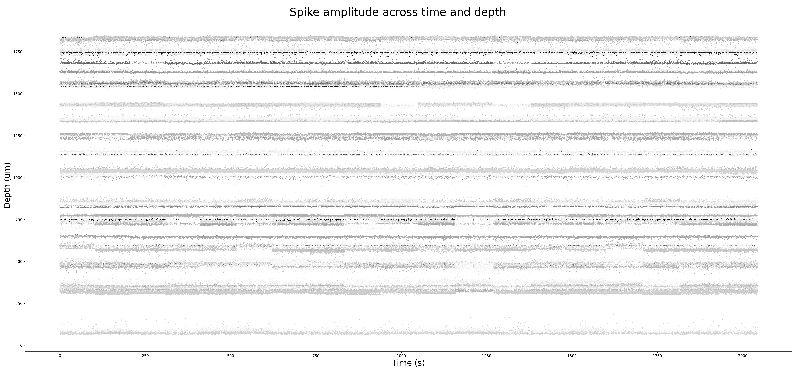
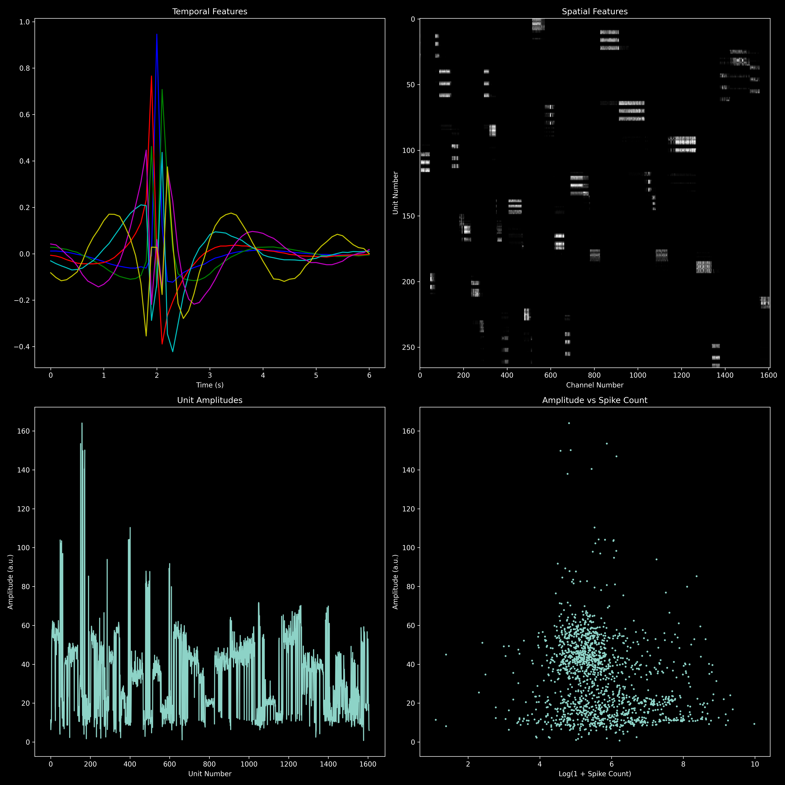
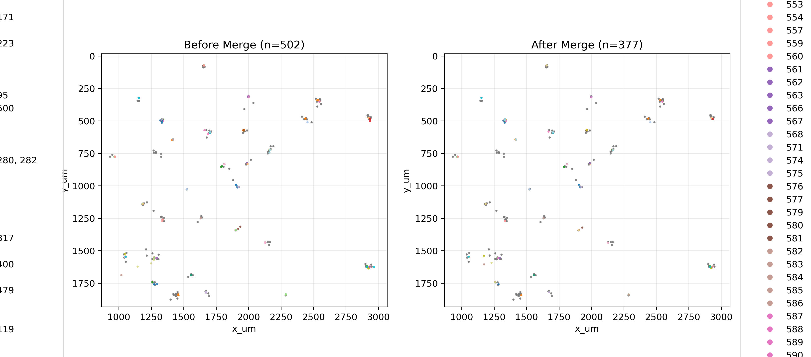

DIV 36 anchor well. Kilosort 4 → SLAy template-similarity merge. (Bombcell is bypassed in the current pipeline path.) The merge step recovers axon arbors that kilosort fragments into 2–4 sibling clusters.


good / mua labels into cluster_KSLabel.tsv; the recon stage's QC filter reads them directly.
cluster_KSLabel.tsv + aux TSVs (sync fixed 2026-05-18 — SLAy commit 426ba71). Final reconstructed-template count on this well: 176.Kilosort splits noisy templates into multiple IDs. Each sibling sees a partial axon → reconstruction gets a fragment.
Pooling spikes across siblings doubles or triples the spike count behind the STA — weak axonal channels finally cross the noise floor.
Recently fixed: SLAy now writes stub rows into every cluster_*.tsv for new merged IDs. The SpikeInterface KS-extractor's inner-join no longer drops post-merge units downstream.
accept_merge assertion relaxed (>= instead of ==) for same-time intra-cluster collisions — big wells (>700 KS units) no longer crash at the auto-merge step. accept_all_merges aux-TSV sync keeps cluster_KSLabel + cluster_Amplitude + cluster_ContamPct coherent after merges.